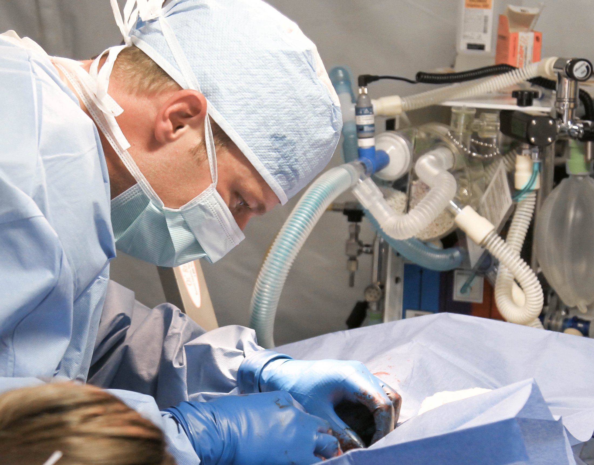
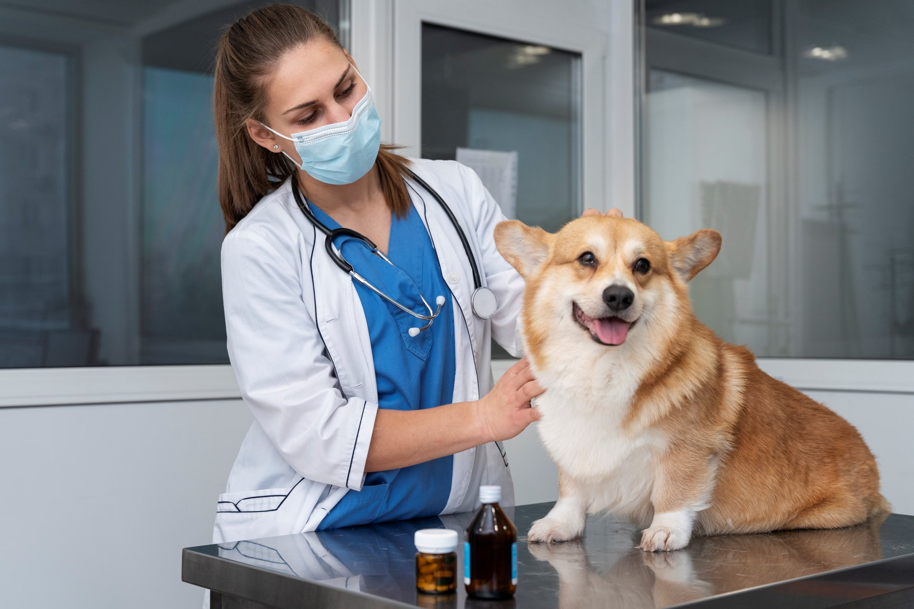
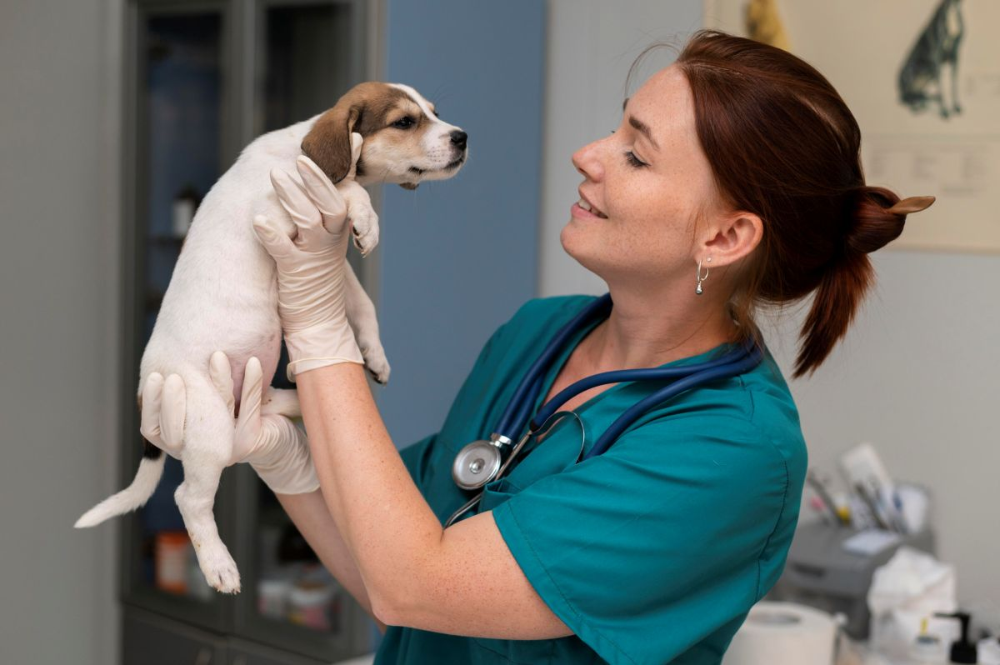
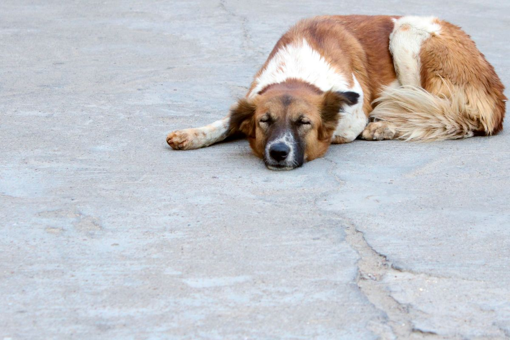
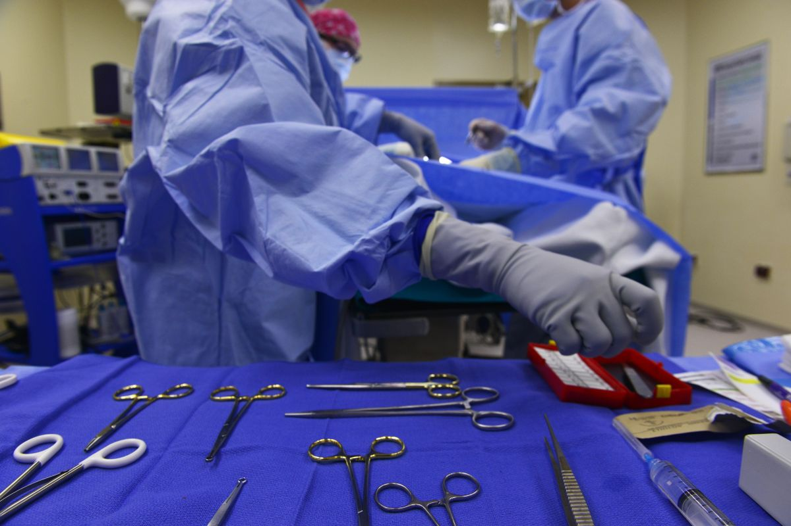
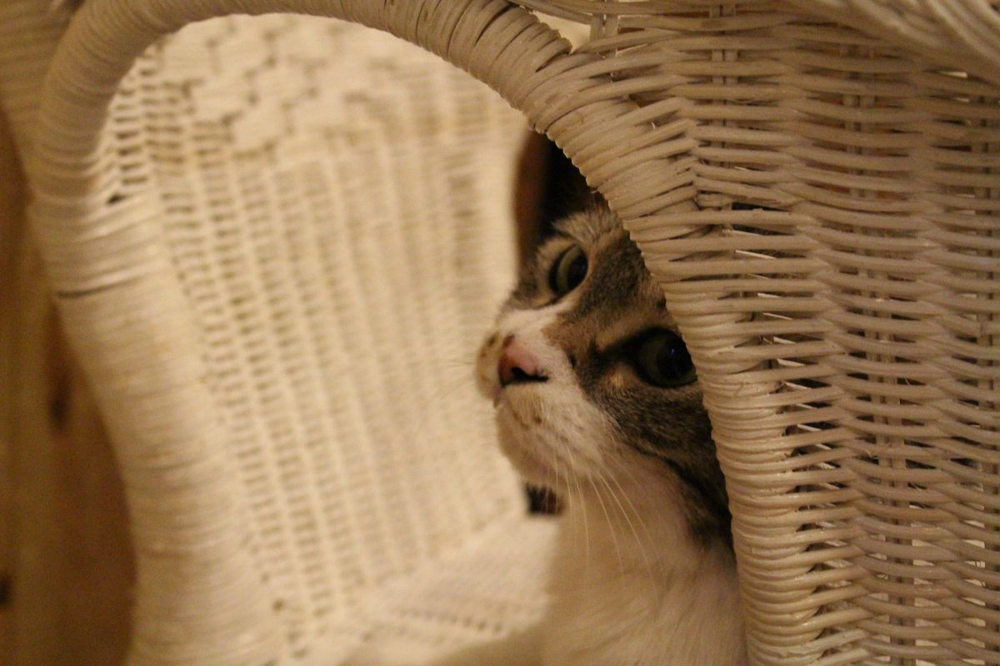

01
Pabellón
Una cirugía necesita un lugar preparado para eso, no una mesa de consulta. Es la diferencia entre derivar y resolver.
Valdivia · Región de Los Ríos
Consulta, pabellón y hospitalización en avenida Ramón Picarte. Ochenta y cuatro personas ya dejaron su reseña.
01 — Lo que nadie explica antes
Esta sección no trae precios: los pone la clínica. Trae algo que casi nunca está escrito y que angustia más que el monto — qué ítems pueden aparecer, cuáles se saben antes de empezar y cuáles no. Con eso usted puede preguntar bien y no llevarse sorpresas.
| Ítem | ¿Se sabe antes? | Qué conviene preguntar |
|---|---|---|
| Consulta | Sí | Cuánto vale y si la de urgencia fuera de horario tiene otro valor. |
| Exámenes | Depende | Cuáles se van a pedir hoy y cuáles pueden esperar al resultado del primero. |
| Imágenes (radiografía, ecografía) | Sí | Si el valor incluye el informe o se cobra aparte. |
| Medicamentos e insumos | Depende | Qué se aplica en el momento y qué se lleva a la casa. |
| Pabellón y anestesia | Depende | Si el presupuesto incluye anestesia, monitoreo y el control posterior. |
| Hospitalización | No del todo | Cómo se cobra —por día, por noche— y a qué hora corta el día. |
| Lo que aparezca en el camino | No | La pregunta que vale por todas: «si esto se pone más caro de lo hablado, ¿me avisan antes de seguir?». |
Esta tabla es orientación general sobre cómo se estructura una atención veterinaria, no un listado de precios ni una indicación clínica. Los valores, lo que está incluido y la forma de cobro los define exclusivamente Veterinaria Dr. Boett. Ninguna cifra aparece acá porque ninguna fue verificada.

Hospital y no consulta:
hay pabellón, y hay noche.
02 — Qué significa que sea hospital
01
Una cirugía necesita un lugar preparado para eso, no una mesa de consulta. Es la diferencia entre derivar y resolver.
02
El animal se puede quedar. Eso permite suero, observación y ajustar el tratamiento durante el día en vez de mandarlo a casa y esperar.
03
Exámenes e imágenes bajo el mismo techo: menos viajes con un animal que ya está mal.
Los servicios exactos, el equipamiento y los horarios de cada uno los tiene que confirmar la clínica: en la ficha de Google no están publicados, y en hospitalización una suposición publicada es una promesa.

84 reseñas en Google
Ochenta y cuatro familias
ya pasaron por acá.

03 — Antes de venir
Si el animal está grave, no pierda tiempo juntando esto: venga. Los datos se pueden reconstruir después; las horas no.
04 — El lugar




05 — Contacto
Llamar antes sirve para dos cosas: saber si hay que ir ahora o puede esperar, y que sepan que va en camino.
Para el equipo de Veterinaria Dr. Boett
Una ficha sin web se lee como «todavía no tienen». Una ficha con un enlace que abre una página en blanco se lee como «algo está roto». Y quien está buscando un hospital veterinario a las diez de la noche, con un animal mal, no vuelve a intentar: se va al siguiente resultado.
La página que empezaron probablemente existe en alguna parte. Lo que falta es publicarla en un dominio propio. Mientras tanto ese enlace está trabajando en contra.